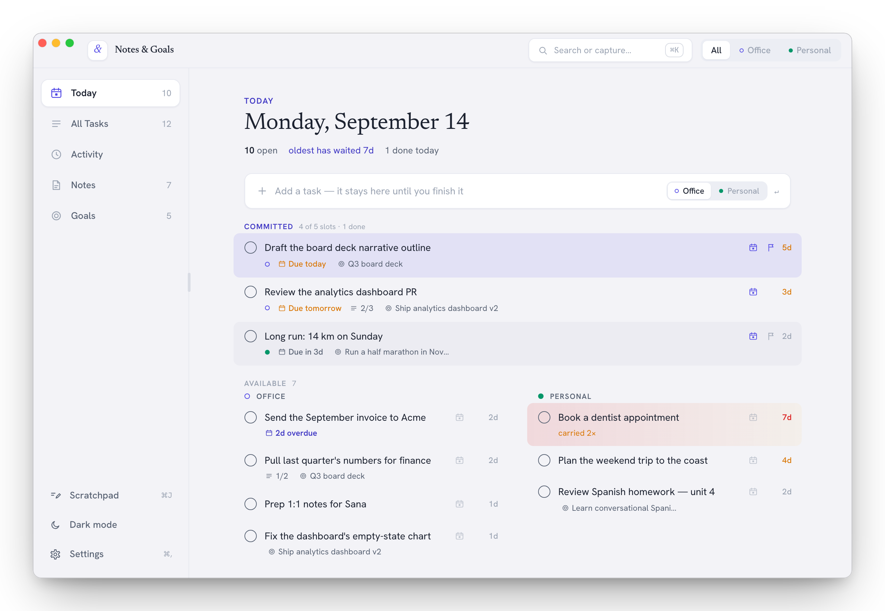

Today
Give the day a finish line.
Commit up to five tasks to today's slate. Finish them all and the day is complete — then close the laptop.
- Open tasks carry forward on their own and show their age.
- Priority flags, due dates, snooze, and subtasks.
- A slide-in detail panel for everything else.
